Amines and aromatic molecules
Week 4 · 45-minute teaching session
A chemical route through this session
Locate each nitrogen pair before predicting proton transfer. Distinguish simple amines, amides and aromatic nitrogens, then combine acid and base sites in an amino acid.
45-minute budget: retrieval 4 min; N bond/charge examples and paired checks 8 min; basicity comparison 6 min; aromatic nitrogen reasoning 12 min; amino-acid charge cases 10 min; integrated check and exit 5 min. Total 45 min, including drawing and discussion.
Suggested 30 seconds; adjust to the explanation and class response. Plan 45 minutes including short drawing and discussion intervals. Routine visual frames take roughly 40 seconds; worked checks need longer and some resolutions can be quicker. Treat timings as guidance, with room for questions.
Retrieve the starting idea
Draw NH₃ with three bonds and a lone pair. What changes when it accepts H⁺?
Suggested 30 seconds; adjust to the explanation and class response. Give students a short individual attempt. Worked answer: The pair becomes an N–H bond; NH₄⁺ has four bonds and positive charge.
Count carbon substituents at nitrogen
Count carbon substituents on nitrogen, not total N bonds
Which number distinguishes primary, secondary and tertiary amines?
Suggested 40 seconds; adjust to the explanation and class response. Ask students to inspect the indicated molecular feature rather than read the answer caption. Worked answer: Count directly attached carbon groups: one, two or three. The neutral ordinary amines shown still have a lone pair.
Apply: count carbon substituents at nitrogen
Classify CH₃NHCH₂CH₃.
Suggested 60 seconds; adjust to the explanation and class response. Allow a brief paper or pair check within this slide. Worked answer: Secondary: two carbon substituents are attached to N, plus one H.
Audit nitrogen before protonation
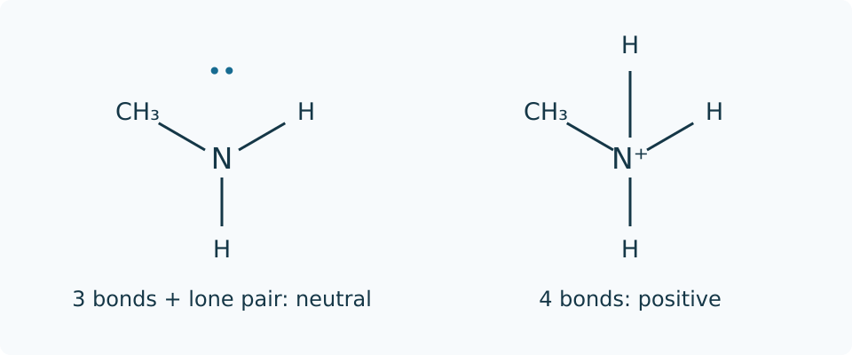
Count nitrogen bonds and its nonbonding pair
How many bonds and nonbonding electrons belong to neutral methylamine N?
Suggested 40 seconds; adjust to the explanation and class response. Ask students to inspect the indicated molecular feature rather than read the answer caption. Worked answer: It has three single bonds and one nonbonding pair. That pair can form the new N–H bond.
Resolve: audit nitrogen before protonation
Count nitrogen bonds and its nonbonding pair
It has three single bonds and one nonbonding pair. That pair can form the new N–H bond.
Suggested 30 seconds; adjust to the explanation and class response. Use a second inspection focus: justify the result by the atom, charge, ratio or observation involved. Next application answer: +1. Ordinary ammonium N has four bonds and no nonbonding pair.
Apply: audit nitrogen before protonation
Give the N formal charge after forming a fourth single bond.
Suggested 60 seconds; adjust to the explanation and class response. Allow a brief paper or pair check within this slide. Worked answer: +1. Ordinary ammonium N has four bonds and no nonbonding pair.
Use a real proton donor
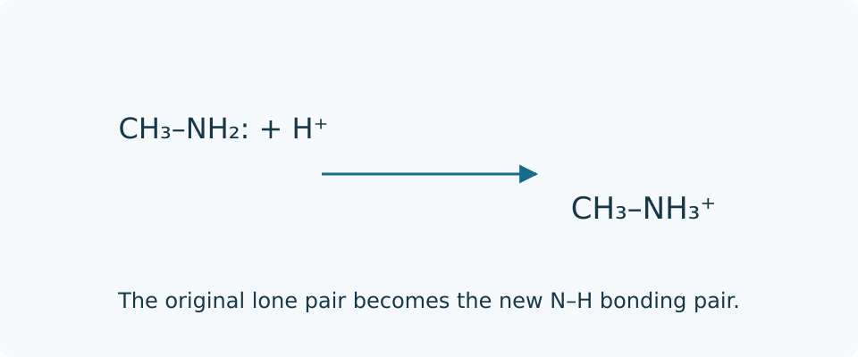
Amine protonation creates four bonds and positive charge
What must accompany the new N–H bond if H–A supplies H?
Suggested 40 seconds; adjust to the explanation and class response. Ask students to inspect the indicated molecular feature rather than read the answer caption. Worked answer: The N pair forms N–H while the H–A bonding pair moves to A. Products are ammonium and A⁻.
Resolve: use a real proton donor
Amine protonation creates four bonds and positive charge
The N pair forms N–H while the H–A bonding pair moves to A. Products are ammonium and A⁻.
Suggested 30 seconds; adjust to the explanation and class response. Use a second inspection focus: justify the result by the atom, charge, ratio or observation involved. Next application answer: CH₃NH₃⁺ + H₂O. Net charge stays +1.
Apply: use a real proton donor
Balance CH₃NH₂ + H₃O⁺.
Suggested 60 seconds; adjust to the explanation and class response. Allow a brief paper or pair check within this slide. Worked answer: CH₃NH₃⁺ + H₂O. Net charge stays +1.
Keep classification separate from charge
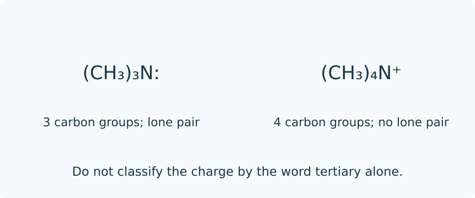
Tertiary amine and quaternary ammonium differ
Why is neutral trimethylamine not quaternary ammonium?
Suggested 40 seconds; adjust to the explanation and class response. Ask students to inspect the indicated molecular feature rather than read the answer caption. Worked answer: Trimethylamine has three carbon groups and a lone pair. Quaternary ammonium has four carbon substituents and positive charge.
Apply: keep classification separate from charge
Is (CH₃)₃NH⁺ a quaternary ammonium ion?
Suggested 60 seconds; adjust to the explanation and class response. Allow a brief paper or pair check within this slide. Worked answer: It is the conjugate acid of a tertiary amine, with three carbon groups and one H. Quaternary ammonium has four carbon groups.
Inspect the group beside nitrogen
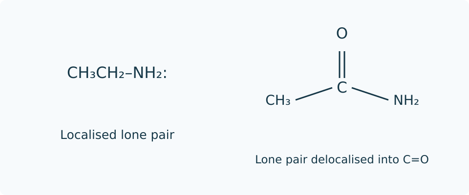
Amine and amide nitrogen have different electron availability
Which local structural feature makes peptide N different from an alkylamine?
Suggested 40 seconds; adjust to the explanation and class response. Ask students to inspect the indicated molecular feature rather than read the answer caption. Worked answer: An amide nitrogen is directly bonded to carbonyl carbon. Its pair can delocalise into C=O.
Resolve: inspect the group beside nitrogen
Amine and amide nitrogen have different electron availability
An amide nitrogen is directly bonded to carbonyl carbon. Its pair can delocalise into C=O.
Suggested 30 seconds; adjust to the explanation and class response. Use a second inspection focus: justify the result by the atom, charge, ratio or observation involved. Next application answer: Amide N, not a simple secondary alkylamine. Its carbonyl connection changes electron availability.
Apply: inspect the group beside nitrogen
Classify nitrogen in CH₃C(=O)NHCH₃.
Suggested 60 seconds; adjust to the explanation and class response. Allow a brief paper or pair check within this slide. Worked answer: Amide N, not a simple secondary alkylamine. Its carbonyl connection changes electron availability.
Conserve charge across resonance contributors
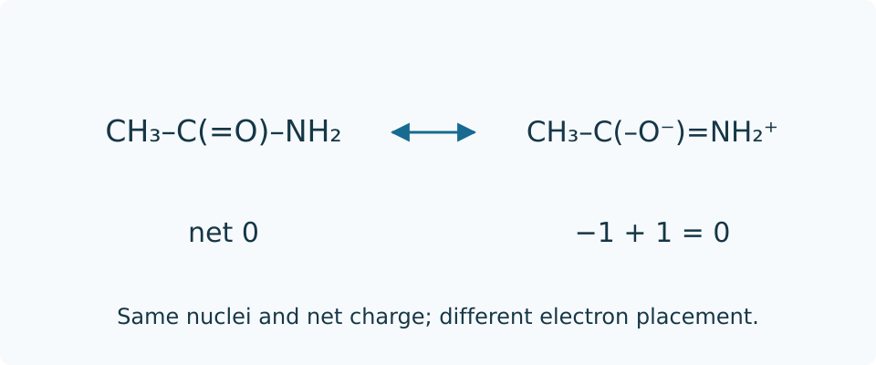
Charges in an amide resonance contributor balance
What charges appear when the N pair forms a C=N pi bond?
Suggested 40 seconds; adjust to the explanation and class response. Ask students to inspect the indicated molecular feature rather than read the answer caption. Worked answer: Nitrogen becomes positive and oxygen negative as the original C=O pi pair moves to O. Net charge remains zero.
Resolve: conserve charge across resonance contributors
Charges in an amide resonance contributor balance
Nitrogen becomes positive and oxygen negative as the original C=O pi pair moves to O. Net charge remains zero.
Suggested 30 seconds; adjust to the explanation and class response. Use a second inspection focus: justify the result by the atom, charge, ratio or observation involved. Next application answer: No. Resonance contributors describe electron placement in one delocalised molecule; nuclear connectivity stays fixed.
Apply: conserve charge across resonance contributors
Do the nuclei move or switch between two molecular structures?
Suggested 60 seconds; adjust to the explanation and class response. Allow a brief paper or pair check within this slide. Worked answer: No. Resonance contributors describe electron placement in one delocalised molecule; nuclear connectivity stays fixed.
Inspect conjugation at aniline nitrogen
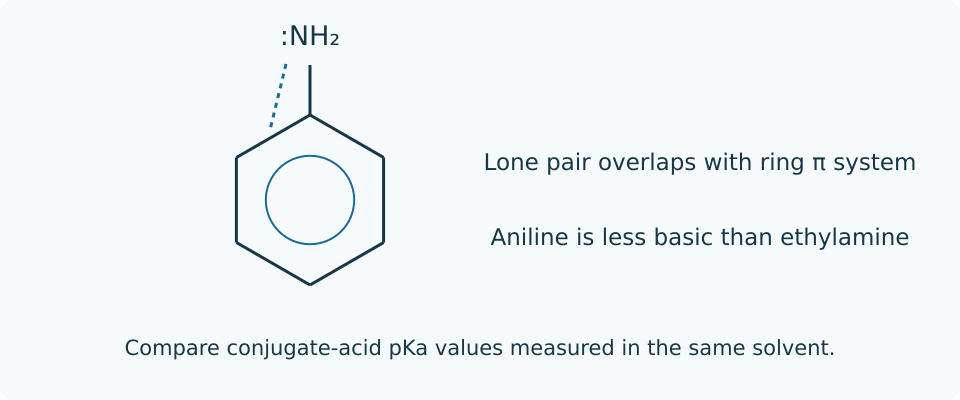
Aniline nitrogen can donate into the aromatic ring
How can the benzene ring affect availability of the N pair?
Suggested 40 seconds; adjust to the explanation and class response. Ask students to inspect the indicated molecular feature rather than read the answer caption. Worked answer: The N pair can overlap with the ring pi system, stabilising the neutral base and lowering its proton affinity relative to a simple alkylamine comparison.
Apply: inspect conjugation at aniline nitrogen
Would a saturated carbon between N and the ring preserve the same direct conjugation?
Suggested 60 seconds; adjust to the explanation and class response. Allow a brief paper or pair check within this slide. Worked answer: No. An sp³ carbon interrupts that direct N-to-ring pi overlap. Other electronic effects can still exist.
Read the correct pKa for a base
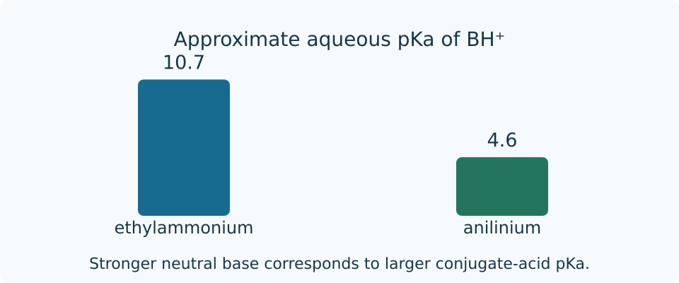
Conjugate-acid pKa compares protonation equilibria
Why compare BH⁺ pKa rather than call neutral B an acid?
Suggested 40 seconds; adjust to the explanation and class response. Ask students to inspect the indicated molecular feature rather than read the answer caption. Worked answer: The conjugate-acid dissociation equilibrium relates BH⁺ to B. Larger BH⁺ pKa corresponds to stronger B under comparable conditions.
Resolve: read the correct pKa for a base
Conjugate-acid pKa compares protonation equilibria
The conjugate-acid dissociation equilibrium relates BH⁺ to B. Larger BH⁺ pKa corresponds to stronger B under comparable conditions.
Suggested 30 seconds; adjust to the explanation and class response. Use a second inspection focus: justify the result by the atom, charge, ratio or observation involved. Next application answer: Ethylamine is the stronger base in this aqueous comparison; ethylammonium is the weaker acid.
Apply: read the correct pKa for a base
Compare ethylammonium 10.7 with anilinium 4.6.
Suggested 60 seconds; adjust to the explanation and class response. Allow a brief paper or pair check within this slide. Worked answer: Ethylamine is the stronger base in this aqueous comparison; ethylammonium is the weaker acid.
Predict a proton-transfer direction
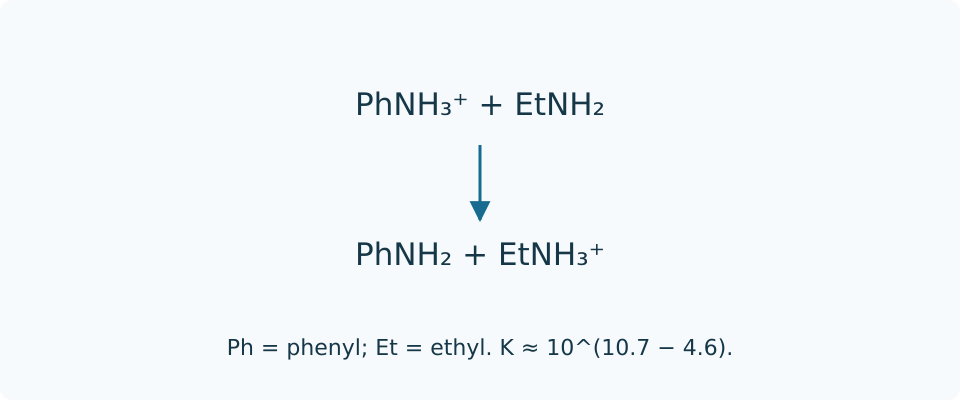
A proton can transfer between two nitrogen bases
Which side contains the weaker acid in the supplied competition?
Suggested 40 seconds; adjust to the explanation and class response. Ask students to inspect the indicated molecular feature rather than read the answer caption. Worked answer: Ethylammonium has larger pKa, so products aniline + ethylammonium are favoured.
Resolve: predict a proton-transfer direction
A proton can transfer between two nitrogen bases
Ethylammonium has larger pKa, so products aniline + ethylammonium are favoured.
Suggested 30 seconds; adjust to the explanation and class response. Use a second inspection focus: justify the result by the atom, charge, ratio or observation involved. Next application answer: About 1.26×10⁶ toward products using compatible approximate aqueous pKa values.
Apply: predict a proton-transfer direction
Estimate 10^(10.7 − 4.6).
Suggested 60 seconds; adjust to the explanation and class response. Allow a brief paper or pair check within this slide. Worked answer: About 1.26×10⁶ toward products using compatible approximate aqueous pKa values.
Separate equilibrium from reaction rate
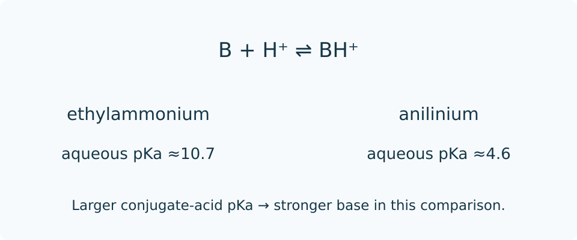
Basicity is an equilibrium comparison, not a reaction-speed ranking
What does this pKa comparison establish, and what does it not establish?
Suggested 40 seconds; adjust to the explanation and class response. Ask students to inspect the indicated molecular feature rather than read the answer caption. Worked answer: It compares proton-transfer equilibria. It does not by itself rank every nucleophilic reaction rate or specify an isolated yield.
Apply: separate equilibrium from reaction rate
Name one other factor needed for a nucleophilic-rate prediction.
Suggested 60 seconds; adjust to the explanation and class response. Allow a brief paper or pair check within this slide. Worked answer: Substrate identity, solvent, steric access or leaving group can matter; a pKa table alone is insufficient.
Check the structural requirements first
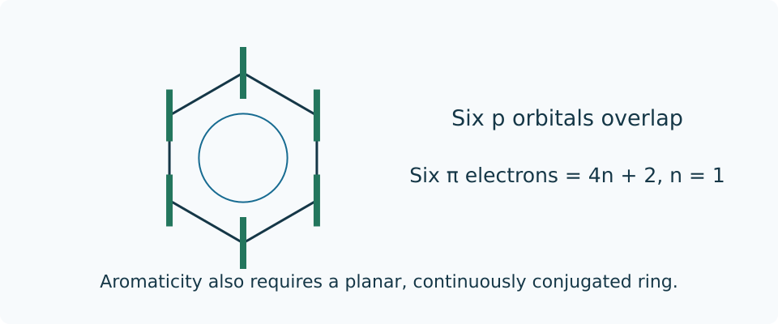
Benzene has six pi electrons in a cyclic conjugated system
Before counting 4n + 2, what must the ring permit?
Suggested 40 seconds; adjust to the explanation and class response. Ask students to inspect the indicated molecular feature rather than read the answer caption. Worked answer: A planar cyclic network with continuous p-orbital overlap is needed for these simple aromatic examples.
Apply: check the structural requirements first
For benzene, what n gives six pi electrons?
Suggested 60 seconds; adjust to the explanation and class response. Allow a brief paper or pair check within this slide. Worked answer: n = 1 in 4n + 2 = 6. These are six electrons, not six pairs.
Trace a path around the ring
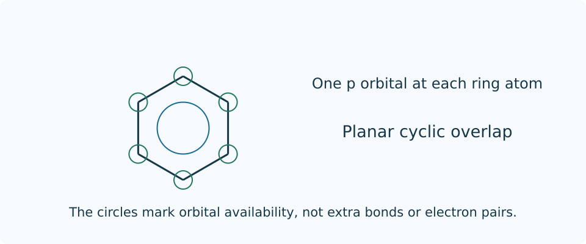
Continuous overlap is required around an aromatic ring
Can the pi network stop at one saturated sp³ ring atom?
Suggested 40 seconds; adjust to the explanation and class response. Ask students to inspect the indicated molecular feature rather than read the answer caption. Worked answer: An ordinary sp³ atom interrupts continuous overlap. Electron counting cannot repair a missing conjugated path.
Resolve: trace a path around the ring
Continuous overlap is required around an aromatic ring
An ordinary sp³ atom interrupts continuous overlap. Electron counting cannot repair a missing conjugated path.
Suggested 30 seconds; adjust to the explanation and class response. Use a second inspection focus: justify the result by the atom, charge, ratio or observation involved. Next application answer: A cyclic sigma skeleton alone does not establish the planar, conjugated pi system required by the simple rule.
Apply: trace a path around the ring
Why is the aromatic rule not a rule for every cyclic molecule?
Suggested 60 seconds; adjust to the explanation and class response. Allow a brief paper or pair check within this slide. Worked answer: A cyclic sigma skeleton alone does not establish the planar, conjugated pi system required by the simple rule.
Distinguish nonaromatic from antiaromatic
A ring alone does not make a compound aromatic
Why is cyclohexane nonaromatic rather than antiaromatic?
Suggested 40 seconds; adjust to the explanation and class response. Ask students to inspect the indicated molecular feature rather than read the answer caption. Worked answer: It lacks a continuously conjugated pi ring. Antiaromaticity is a different situation, not a synonym for any nonaromatic ring.
Apply: distinguish nonaromatic from antiaromatic
Does rotating a cyclohexane chair create the missing pi bonds?
Suggested 60 seconds; adjust to the explanation and class response. Allow a brief paper or pair check within this slide. Worked answer: No. Conformational motion does not change its sigma-bond connectivity into a benzene pi system.
Locate the separate pyridine pair
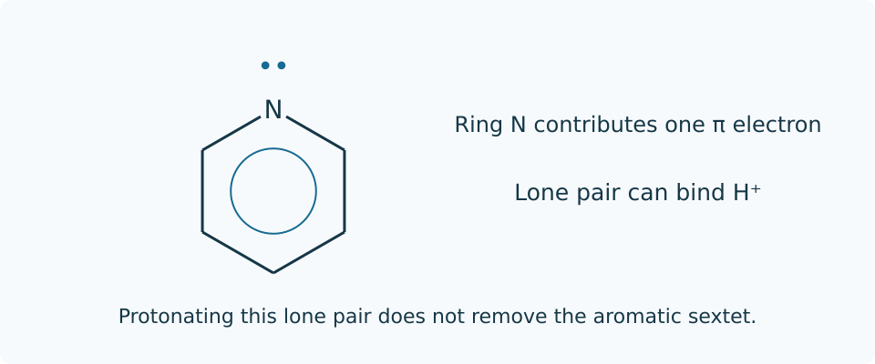
Pyridine has a lone pair outside its aromatic pi system
Which nitrogen electrons are outside the aromatic sextet?
Suggested 40 seconds; adjust to the explanation and class response. Ask students to inspect the indicated molecular feature rather than read the answer caption. Worked answer: The displayed lone pair lies outside the pi system. N supplies one different electron to the aromatic network.
Resolve: locate the separate pyridine pair
Pyridine has a lone pair outside its aromatic pi system
The displayed lone pair lies outside the pi system. N supplies one different electron to the aromatic network.
Suggested 30 seconds; adjust to the explanation and class response. Use a second inspection focus: justify the result by the atom, charge, ratio or observation involved. Next application answer: No. Adding it would double-count electrons from distinct orbitals and give an incorrect aromatic count.
Apply: locate the separate pyridine pair
Should that lone pair be added to the six-electron count?
Suggested 60 seconds; adjust to the explanation and class response. Allow a brief paper or pair check within this slide. Worked answer: No. Adding it would double-count electrons from distinct orbitals and give an incorrect aromatic count.
Predict protonation without breaking aromaticity
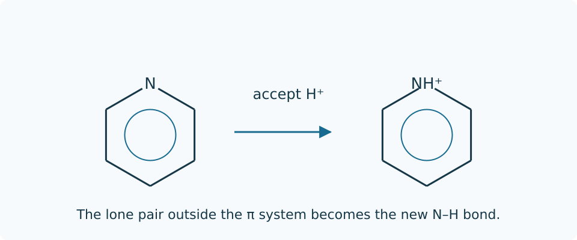
Pyridine protonation can retain the aromatic sextet
Which pair forms the N–H bond in pyridinium?
Suggested 40 seconds; adjust to the explanation and class response. Ask students to inspect the indicated molecular feature rather than read the answer caption. Worked answer: The non-pi lone pair binds H⁺. The aromatic sextet can remain, while N carries positive charge.
Apply: predict protonation without breaking aromaticity
What changes in N charge after accepting H⁺?
Suggested 60 seconds; adjust to the explanation and class response. Allow a brief paper or pair check within this slide. Worked answer: It changes from neutral pyridine N to positive pyridinium N; the carbon skeleton remains fixed.
Count pyrrole electrons once
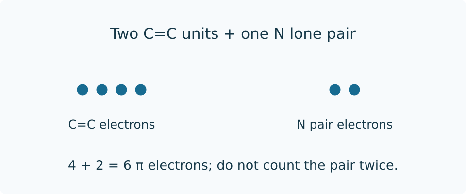
Pyrrole contributes two electrons from nitrogen
How many electrons come from the nitrogen lone pair?
Suggested 40 seconds; adjust to the explanation and class response. Ask students to inspect the indicated molecular feature rather than read the answer caption. Worked answer: Two electrons from N plus four from the two carbon pi bonds give six in the aromatic system.
Resolve: count pyrrole electrons once
Pyrrole contributes two electrons from nitrogen
Two electrons from N plus four from the two carbon pi bonds give six in the aromatic system.
Suggested 30 seconds; adjust to the explanation and class response. Use a second inspection focus: justify the result by the atom, charge, ratio or observation involved. Next application answer: The same pair cannot be treated as both outside and inside the pi system; ordinary N protonation would disrupt its stabilising role.
Apply: count pyrrole electrons once
What goes wrong if the N pair is also counted as freely available?
Suggested 60 seconds; adjust to the explanation and class response. Allow a brief paper or pair check within this slide. Worked answer: The same pair cannot be treated as both outside and inside the pi system; ordinary N protonation would disrupt its stabilising role.
Compare the two aromatic nitrogen sites
Pyrrole uses its nitrogen lone pair in the aromatic sextet
Why is pyrrole N much less basic than pyridine N?
Suggested 40 seconds; adjust to the explanation and class response. Ask students to inspect the indicated molecular feature rather than read the answer caption. Worked answer: Pyrrole uses its pair in the aromatic sextet; pyridine keeps a separate pair available.
Apply: compare the two aromatic nitrogen sites
Which molecule more readily gives ordinary N protonation in comparable conditions?
Suggested 60 seconds; adjust to the explanation and class response. Allow a brief paper or pair check within this slide. Worked answer: Pyridine. This conclusion follows from the different orbital roles, not from nitrogen atom count.
Combine acid and base sites in one molecule
Glycine charge depends on pH
What formal charges can coexist in a net-neutral glycine form?
Suggested 40 seconds; adjust to the explanation and class response. Ask students to inspect the indicated molecular feature rather than read the answer caption. Worked answer: A protonated ammonium site has +1 and carboxylate has −1. Their sum is zero: a zwitterion.
Apply: combine acid and base sites in one molecule
Does net zero imply that all sites are nonpolar?
Suggested 60 seconds; adjust to the explanation and class response. Allow a brief paper or pair check within this slide. Worked answer: No. Opposite formal charges remain and can interact strongly with polar surroundings.
Use two supplied pKa values
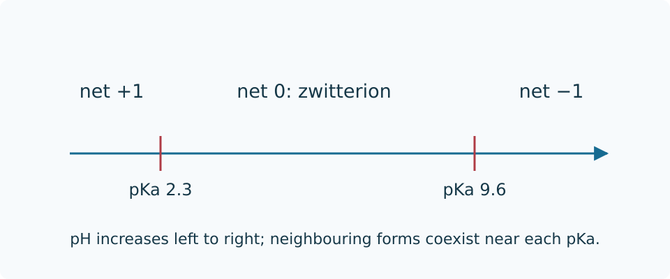
Two pKa values produce three glycine charge regions
At pH 6, which form predominates for pKa 2.3 and 9.6?
Suggested 40 seconds; adjust to the explanation and class response. Ask students to inspect the indicated molecular feature rather than read the answer caption. Worked answer: COOH is mainly deprotonated while ammonium remains mainly protonated: H₃N⁺CH₂COO⁻.
Resolve: use two supplied pKa values
Two pKa values produce three glycine charge regions
COOH is mainly deprotonated while ammonium remains mainly protonated: H₃N⁺CH₂COO⁻.
Suggested 30 seconds; adjust to the explanation and class response. Use a second inspection focus: justify the result by the atom, charge, ratio or observation involved. Next application answer: No. Neighbouring protonation forms coexist; dominant-form drawings are approximations away from transition regions.
Apply: use two supplied pKa values
At pH close to either pKa, is only one drawn form present?
Suggested 60 seconds; adjust to the explanation and class response. Allow a brief paper or pair check within this slide. Worked answer: No. Neighbouring protonation forms coexist; dominant-form drawings are approximations away from transition regions.
Finish the high-pH charge audit
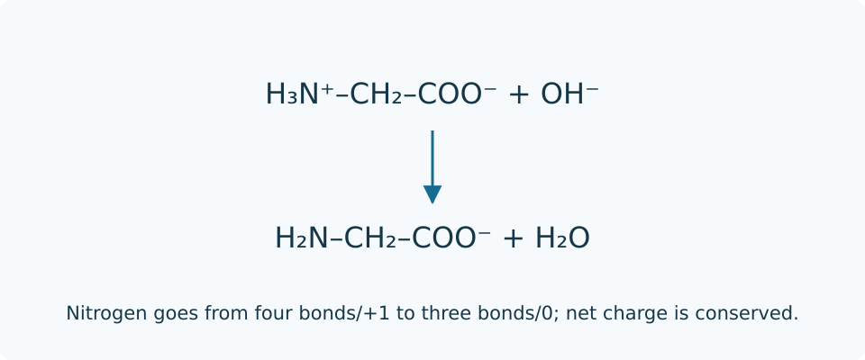
High pH removes the ammonium proton
Which site loses H⁺ to make the net −1 amino-acid form?
Suggested 40 seconds; adjust to the explanation and class response. Ask students to inspect the indicated molecular feature rather than read the answer caption. Worked answer: The ammonium site loses a proton, leaving neutral NH₂ plus carboxylate. Nitrogen returns to three bonds.
Apply: finish the high-pH charge audit
Write the net charge on each side of zwitterion + OH⁻ → anion + water.
Suggested 60 seconds; adjust to the explanation and class response. Allow a brief paper or pair check within this slide. Worked answer: Left: 0 −1 = −1. Right: −1 + 0 = −1; charge is conserved.
Integrate one short case
At pH 6, use glycine pKa values 2.3 and 9.6 to draw the dominant form and assign every charge.
Suggested 120 seconds; adjust to the explanation and class response. Give time to formulate the claim and compare a partner explanation. Worked answer: H₃N⁺CH₂COO⁻ predominates; opposite formal charges sum to zero. Nearby protonation forms coexist, especially near each pKa.
Compare the worked reasoning
H₃N⁺CH₂COO⁻ predominates; opposite formal charges sum to zero. Nearby protonation forms coexist, especially near each pKa.
Suggested 60 seconds; adjust to the explanation and class response. Ask students to identify the exact step or observation their own reasoning omitted. This is a correction interval within the session, not a new topic.
Exit explanation
Why can two aromatic nitrogen atoms have very different basicity?
Suggested 40 seconds; adjust to the explanation and class response. Worked answer: Their lone pairs can occupy different orbital roles: pyridine keeps a separate pair while pyrrole uses its pair in the aromatic sextet. Ask for a causal explanation, not a single vocabulary label.
Continue with independent practice
Use the exercises , then the self-check .
The reading guide offers optional background reading.
Suggested 20 seconds; adjust to the explanation and class response. Preview the local exercise route. No book purchase or external problem set is needed to complete it. Leave time to note one corrected misconception.